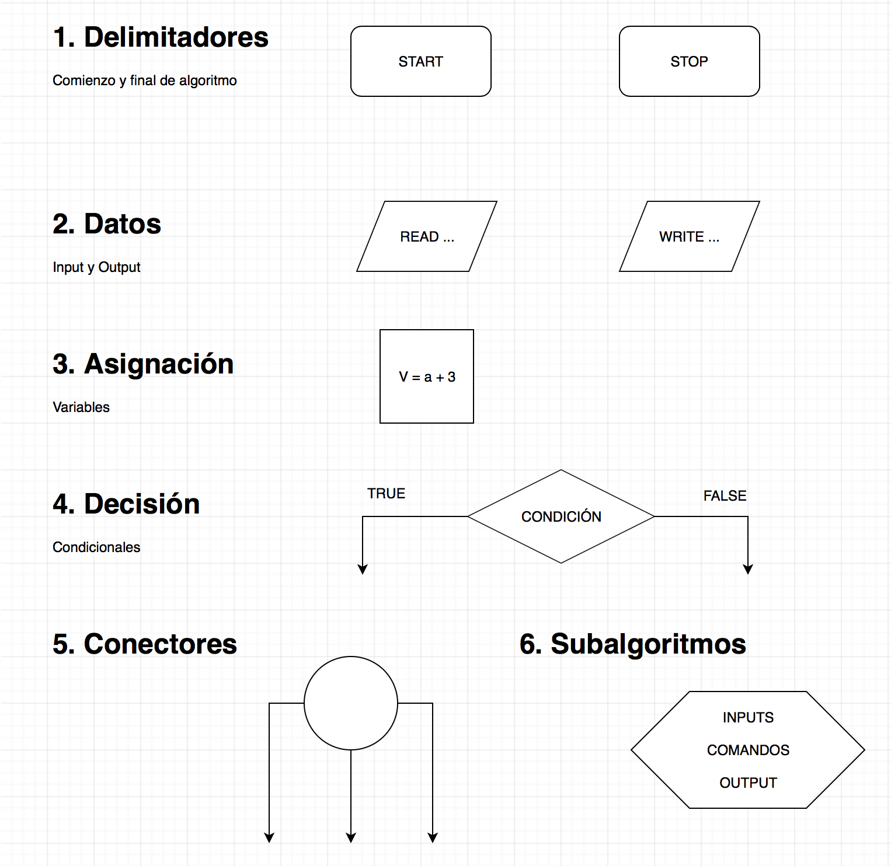
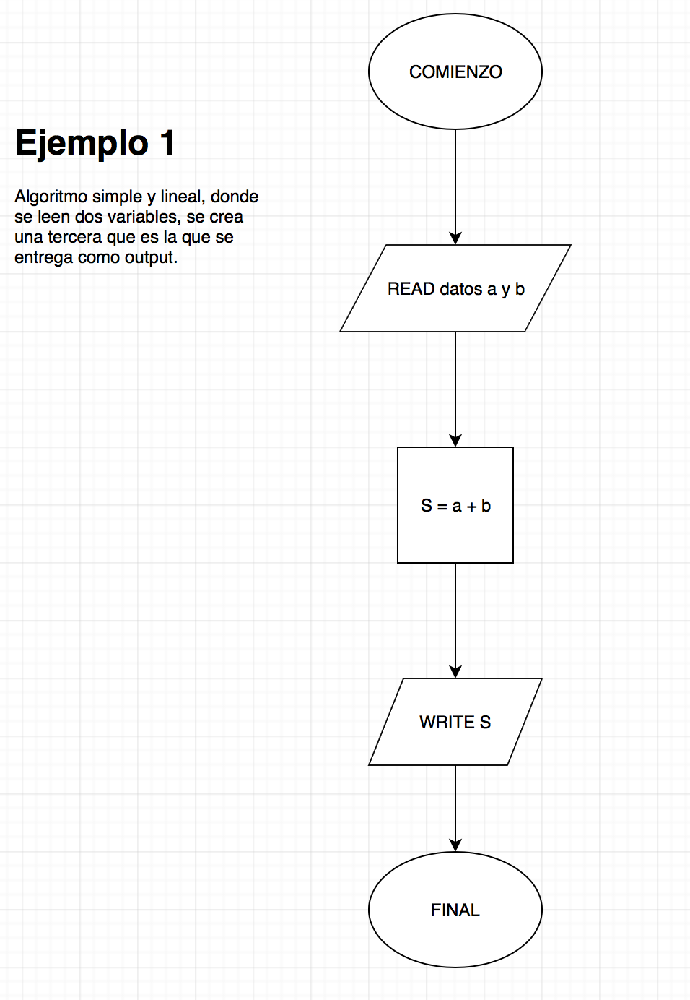
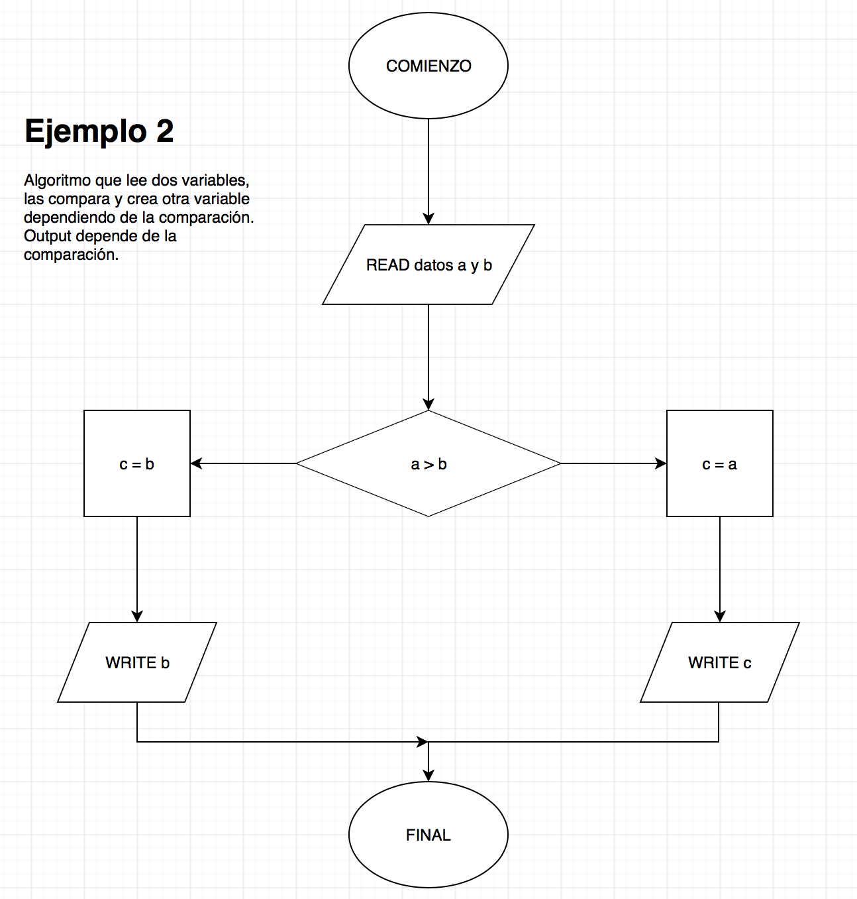
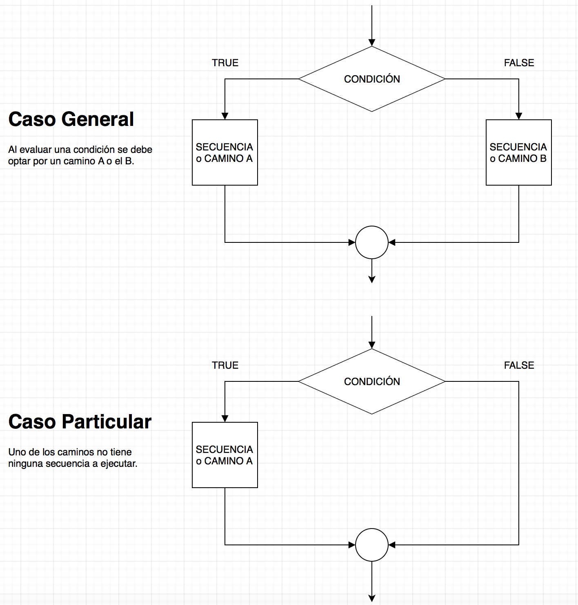
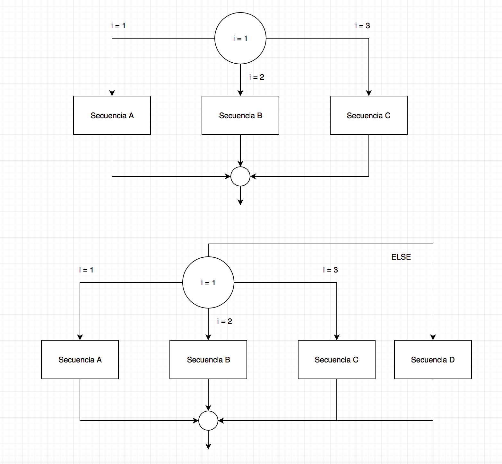
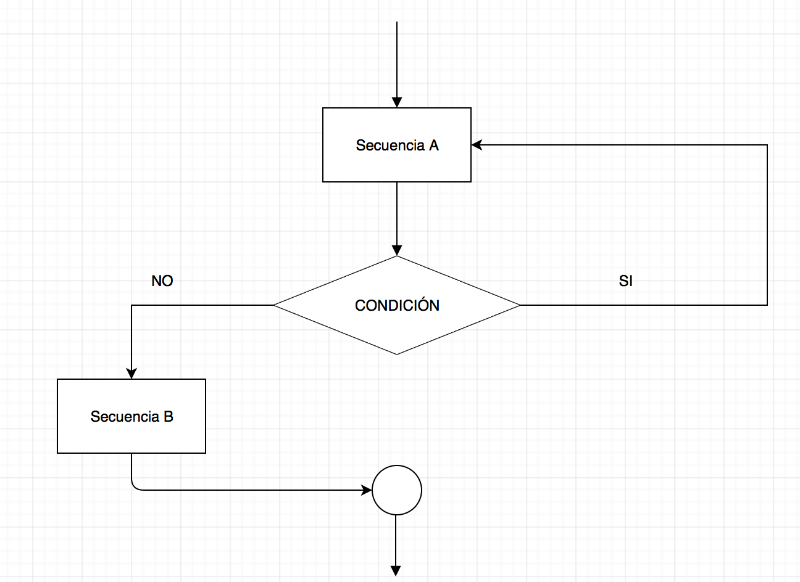
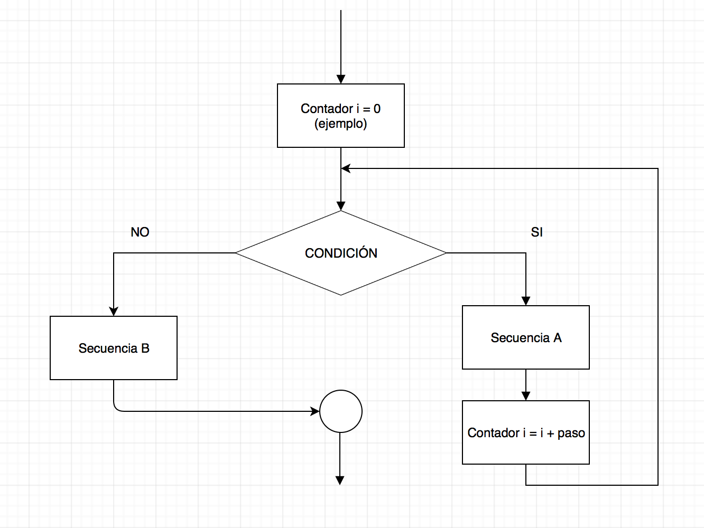
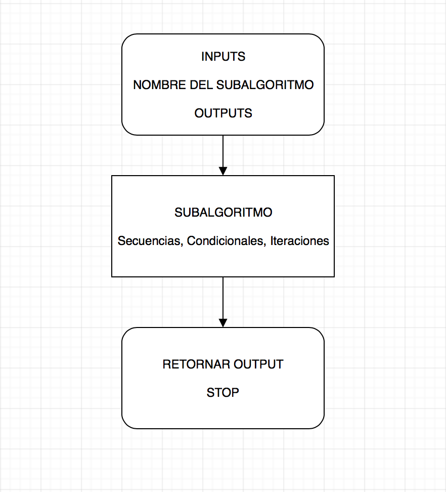
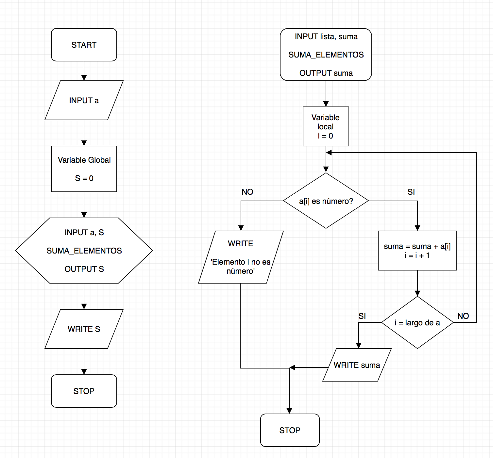

Nota: este notebook fue creado por el Profesor Ismael Botti (ibotti en udd punto cl).

** Es importante darse cuenta de que la programación no es para nada algo especial, es una forma alternativa de resolver problemas, como los que tenemos en los cursos matemáticos**
Ejemplo:
\[
f(x) = \left.
\begin{cases}
2x+x, & \text{para } x < 0 \\[1ex]
\ln\left(3x\right), & \text{para } x \in [0, 7] \\[1ex]
\dfrac{3x}{2}, & \text{para } x > 7\\[1ex]
\end{cases}
\right.
\]
Cada esquema debe comenzar con un COMIENZO (START) y terminar en un FINAL (STOP). Sólo debe haber un bloque START y un STOP en un esquema.
No se debe improvisar!, sólo usar bloques. Es por eso que hay que pensar muy bien como conectar los bloques.
Flechas deben tocar los bloques de inicio y final.


Se usa cuando tenemos dos alternativas y sólo podemos escoger una.
Es importante tener un criterio: condición matemática!
Una vez que se haya optado por una opción o la otra, el algoritmo seguira por un camino donde:

Condicionales se pueden ocupar para:
Ejemplo: Escriba un esquema lógico para encontrar el valor de \(E\), definido como
# if-else
# 
Ejemplo: Escriba un esquema lógico para evaluar \(f\), definido como
Es importante notar que la selección y la decisión se diferencian en que la primera compara igualdades, mientras que la segunda compara tanto igualdades como desigualdades
# if-elif-else
# Se componen de:
- Un contador
- Una condición de salida
- Comandos (secuencia)
Todas las partes son igualmente importantes. Si NO hay un:
El primer y segundo tipo se diferencian en la posición de la condición de término del loop:

Ejemplo:
# for-break-continue
Ejemplo:
# while / forCorresponde a un pedazo de código que es re-utilizable a lo largo del algoritmo principal.
Un subalgoritmo se conforma de:
- un nombre: es lo más descriptivo posible
- las tres partes fundamentales de un algoritmo: inputs, comandos y outputs
Dentro de un subalgoritmo puede o no tener inputs o outputs.
Para usar un subalgoritmo hay que definirla antes.
Un subalgoritmo se define una sola vez y puede ocuparse múltiples veces dentro del algoritmo pricipal.

No todas las variables dentro de un subalgoritmo son accesibles en el algoritmo principal. Esto porque hay variables locales y globales, lo que es conocido como el scope o alcance de una variable.
Para llamar un subalgoritmo (ejecutarlo), debemos:

docstring adecuado.None.1. Dibuje un diagrama de flujo para un algoritmo que pregunte dos números, \(a\) y \(b\), y devuelva su división
\[S=\dfrac{a}{b}\]
2. Dibuje un diagrama de flujo para un algoritmo que pregunte dos números, \(a\) y \(b\), y devuelva \[ S = \dfrac{\sqrt{a}}{b}\]
3. Dibuje un diagrama de flujo para un algoritmo que pregunte tres números, \(a\), \(b\) y \(c\), y devuelva \[ S = \dfrac{\sqrt{a}+\sqrt{b}}{c}\]
4. Dibuje un diagrama de flujo para un algoritmo que pregunte un número \(x\) y evalúe \[ f(x) = \left.
\begin{cases}
x^2+1, & \text{para } x \le 0 \\[1ex]
2-x, & \text{para } x > 0 \\[1ex]
\end{cases}
\right.\]
5. Dibuje un diagrama de flujo para un algoritmo que tenga como input una lista de valores \(x_i\) y entregue su suma \[ S = \sum_{i=0}^{n} x_i \]
El algoritmo debe incluir subalgoritmos para: (1) calcular el largo de la lista, (2) calcular la suma de los elementos.